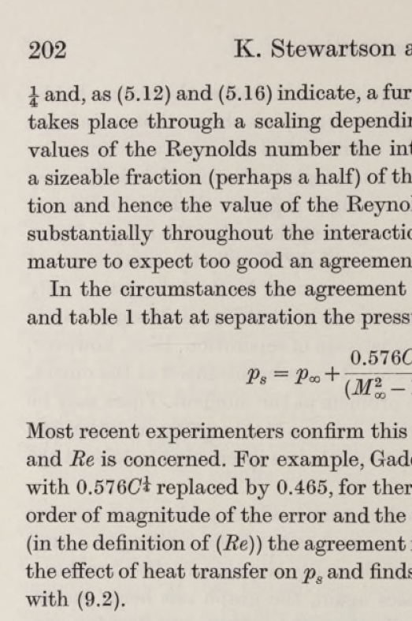

01中文摘要
建立层流边界层与中等强度激波干扰时初始压升及随之分离的合理理论。理论以Lighthill（1953）的线性化理论为基础，将流动分为三部分：边界层主体，在无粘力作用下改变；邻近超声速主流，其中压力变化很小；以及按边界层尺度衡量的近壁区，其中速度相对变化很大，但由不可压缩边界层方程控制。前两部分可常规处理，问题化为不可压缩边界层问题。该问题有三个解：未扰动流、自发产生逆压梯度并使摩阻下降至零继而形成回流的解，以及顺压解。用近似方法积分含回流边界层得到稳定解，与实验定性符合，但定量误差20%，作者认为源于实验雷诺数偏低。
原始摘要（英文/原文）
A rational theory is developed to explain the initial pressure rise and consequent separation of a laminar boundary layer when it interacts with a moderately strong shock. In this theory, which is firmly based on the linearized theory of Lighthill (1953), the region of interest is divided into three parts: the major part of the boundary layer, which is shown to change under largely inviscid forces, the supersonic main stream just adjacent to the boundary layer in which the pressure variation is small; and a region close to the wall, on boundary-layer scale, in which the relative variation of the velocity is large but is controlled by the incompressible boundary-layer equations, together with novel boundary conditions. We find that the first two parts can be handled in a straightforward way and the problem of self-induced separation reduces, in its essentials, to the solution of a single problem in the theory of incompressible boundary layers. It is found that this problem has three solutions, one of which corresponds to undisturbed flow and another describes a boundary layer which, spontaneously, generates an adverse pressure gradient and a decreasing skin friction which eventually vanishes and then downstream a reversed flow is set up. The third solution generates a favourable pressure gradient and is not relevant to the present study. Although there has hitherto been no valid numerical method of integrating a boundary layer with reversed flow, we find that an ad hoc method seems to lead to a stable solution which has a number of the properties to be expected of a separated boundary layer. Comparison with experiment gives qualitatively good agreement, but quantitatively errors of the order of 20% are found. It is believed that these errors arise because the Reynolds numbers at which the experiments were carried out are too small.
02阅读说明
文章类型：理论分析（三层渐近展开 + 边界层数值积分），研究层流边界层与中等强度激波干扰时的自诱导分离。材料范围：Proc. Roy. Soc. A 312, 181–206 (1969) 的 26 页扫描 OCR；正文论证完整，但 1969 年铅印公式经 OCR 后大量残缺（分式、上下标、积分限错位），部分数值需回原文核对。图件清单仅抓取到第22页 Table 1 一张（file=tab01_p22.png），正文图1–6 无裁剪图。信息完整度：文字与结论完整，公式中等，图件低。已用 Read 打开 PDF 第9–13、21–22 页核对式(4.9)–(4.12)、(5.1)–(5.17)、(6.1)–(6.9)、(9.2) 与 Table 1；提取口径以 bundle 页码为准。 文章类型：期刊
03一句话核心与三句话摘要
用三层渐近理论证明层流边界层与超声速主流可自持干扰并自发分离，给出通用压力与摩阻曲线。
- 层流边界层为何在入射激波前方很远处自发分离，长期缺乏合理解释：边界层方程抛物、主流超声速，都不允许扰动上传，而已有近似方法或纯无粘、或缺乏理性基础。 AI概括
- 作者以 ε=(Re)^(−1/8) 为小参数，把干扰区分成主边界层（无粘弯曲流线）、贴壁内层（不可压边界层）和外侧超声速区（Prandtl-Glauert 方程），通过匹配把问题化为一个与 M∞、壁温、粘性律无关的通用不可压边界层问题并数值积分。 原文明确
- 该通用问题有三个解：平凡解、自发生成逆压梯度并最终出现回流的分离解、以及顺压解；数值解在分离点正则并可稳定推进到回流区，与实验定性一致，但压力升幅和流向尺度误差约 20%，作者归因于实验雷诺数太低。 原文明确
04核心内容清单
| 要点 | 类型 | 重要性 | 原文依据 | 属性 |
|---|---|---|---|---|
| 提出自诱导分离的理性三层渐近理论：主边界层无粘、贴壁内层不可压、外层超声速 Prandtl-Glauert，三者匹配。 | 理论框架 | A | 第3、6–12页，Sec. 1、3–5 | 原文明确 |
| 尺度选择 ε=(Re)^(−1/8)，干扰区长度 O(ε³)、压力变化 O(ε²)、内层厚度 O(ε⁵)。 | 标度 | A | 第3、6页，式(3.1)(3.2) | 原文明确 |
| 三层匹配把问题化为一个通用不可压边界层问题，与 M∞、壁温、粘性律无关，可一次性积分。 | 核心结论 | A | 第12、13页，式(5.17)(6.1)(6.2) | 原文明确 |
| 通用问题有三个解：平凡解、自发生成逆压梯度并分离的解（a1>0）、顺压解（a1<0）。 | 解的结构 | A | 第13–14页，式(6.3)(6.4)(6.13) | 原文明确 |
| 线性本征值由 Airy 函数给出，κ≈0.8272，决定压力扰动的指数增长率。 | 解析结果 | A | 第13–14页，式(6.8)(6.9) | 原文明确 |
| 数值解在分离点正则：位移厚度与压力梯度强耦合时 Goldstein 奇性不可能出现。 | 理论论证 | A | 第200–201页，Sec. 9 | 原文明确 |
| 解可稳定推进到回流区：压力趋平台、摩阻过零后回升、回流区增厚而最大回流速度减小。 | 数值结果 | A | 第197–199页图1–3，第201页 | 原文明确 |
| 给出分离压力标度 ps−p∞∝C^(1/4)ρ∞U∞²/[(M∞²−1)^(1/4)Re^(1/2)]，与实验的 M∞、Re 依赖一致。 | 工程公式 | A | 第22页，式(9.2) | 原文明确 |
| 与 Chapman 等实验相比压力升幅高约 20%、x 尺度浅约 20%，归因于实验 Re 太低（理论需 Re~10⁸）。 | 验证与误差 | A | 第204–205页，图6、式(9.9) | 原文明确 |
| 分离下游的稳定唯一解缺乏严格理论基础：存在无穷多待定常数、需末端附加条件、稳定性理论只覆盖上游。 | 局限 | B | 第201页 | 原文明确 |
| 与 Gadd、Lees–Reeves、Nielsen–Holt 方法的比较：本文更理性但定量不占优；Lees–Reeves 对绝热壁更准但非理性。 | 方法评述 | B | 第4–5、202–205页 | AI概括 |
05引言：研究问题与领域缺口
激波入射到壁面边界层时，边界层会在激波入射点上游相当距离处分离，产生压缩波乃至次生激波，随后自由剪切层再附并再次产生压缩波（第1页，Introduction）。作者把核心难题表述为：边界层方程是抛物型的、主流又是超声速的，二者都不允许扰动向上游传播，因此分离为何能“自发”发生需要解释；亚声速层或回流区的上游传播机制因尺度太小、且在分离上游不存在死水区而不能成立（第2页）。既有工作：Chapman、Kuehn & Larsen (1958) 给出定性正确的压力升与 M∞、Re 依赖；Lighthill (1953) 提出内层概念并指出自发变化的可能，被作者视为整个问题的钥匙；Gadd (1957) 的近似方法物理正确但“严格说来是非理性的”；Nielsen–Holt 的积分关系法假设粘性在整个边界层都重要，Lees–Reeves 法使用 Falkner–Skan 型并把压力梯度与 β 解耦，均受作者批评（第3–5页）。本文目标是建立自洽的渐近展开，把 Lighthill 理论推广到非线性干扰，并为 Gadd 方法提供基础；限定层流、直壁、初始干扰段（第2页）。
06流动条件与几何构型
| 项目 | 数值/描述 | 依据 | 备注 |
|---|---|---|---|
| 几何构型 | 半无限平板，前缘在原点，x≥0；直壁、无限长；二维 | 第5页，Sec. 2 | |
| 来流 | 均匀、平行于 x 轴的超声速流，速度 U∞；M∞>1 的有限值 | 第5页，Sec. 2 | |
| 边界层状态 | 层流，在 x=x0 处已充分发展，取广义 Blasius 型 U0(y)；转捩被排除在讨论之外 | 第5页，Sec. 2；第1–2页 | |
| 雷诺数 | Re=U∞x0/ν∞，理论要求很大（ε=(Re)^(−1/8)→0，作者称需 Re~10⁸）；Chapman 实验有效雷诺数 ε^(−8)=39000（x/L=0.238）；一般实验 Re 很少超过 10⁵ | 第5页式(2.1)；第22、24页 | |
| 壁面热条件 | 壁温 Tw 恒定；主要对比为绝热壁，也讨论冷却壁；作者称冷却的影响只是程度问题 | 第5页；第5、202页 | |
| 流体性质 | 牛顿流体；粘性系数 μ 与导热系数 k 仅为温度 T 的函数；定量算例采用 Chapman 粘性律 | 第5–6页，式(2.3) | |
| 比热比 | γ（比热比）出现在公式中；具体取值文中未提及 | 第7页，式(3.9) | |
| 干扰强度 | 中等强度激波/弱干扰：压力变化 O(ε²)，流向尺度 O(ε³)；仅研究分离初段，不解析入射激波本身 | 第3、6页 | |
| 实验对比工况 1（Chapman 等） | M∞=2.7，e⁸=39000（x/L=0.238），绝热壁；由图17a 取数据 | 第24–25页，图6 | |
| 实验对比工况 2（Lewis、Kubota & Lees） | M∞=4–6，Re=6.8×10⁴–10⁶，含绝热壁与冷壁 | 第202页，图5 | |
| 实验对比工况 3（Gadd） | 绝热壁，M∞=3；其近似理论压力比本文小 20%、x 尺度陡 20% | 第202、204页 | |
| 湍流度/噪声 | 文中未提及（层流理论，不涉及风洞来流品质） | 全文 | |
| 边界层厚度/动量厚度 | 文中未作为独立参数给出；仅通过 U0′(0) 与 Re 进入问题 | 全文 | |
| 普朗特数 | 文中未提及 | 全文 |
07核心现象与关键参数
| 参数 | 定义 | 数值 | 关系/说明 | 依据 |
|---|---|---|---|---|
| ε | 小参数，ε=(Re)^(−1/8)，Re 基于 x0 | 理论上 →0；实验中 ε>1/4 | ε=(Re)^(−1/8) | 第6页，式(3.1) |
| 干扰区尺度 | 流向、法向与内层坐标 | x−x0=O(ε³)，y=O(ε⁴)，内层 y=O(ε⁵) | x−x0=ε³X，y=ε⁴Y，y=ε⁵Z | 第6、11页，式(3.2)(5.5) |
| 扰动幅值阶 | 主边界层与外层扰动 | 主边界层 u~ε、v~ε²；外层 u,v,p~ε²；压力 p−p∞~ε² | 式(3.3)–(3.5)、(4.6)–(4.8) | 第6、9–10页 |
| κ | 线性本征解 p=a1e^{κx} 的指数，由 Airy 函数积分确定 | ≈0.8272 | κ⁻¹=−(1/Ai′(0))∫₀^∞Ai(θ)dθ | 第13–14页，式(6.9) |
| U0′(0) | 壁面处无量纲平均剪切，Chapman 流体 | 0.332(U∞/x0)(Tw/T∞)C^(−1/2) | 式(5.2) | 第10页 |
| 分离点压力系数 | 式(9.2) 中压力升幅的系数 | 本文 0.576；Gadd 绝热壁 0.465 | ps=p∞+0.576C^(1/4)ρ∞U∞²/[(M∞²−1)^(1/4)Re^(1/2)] | 第22页，式(9.2) |
| 分离点数值解 | Table 1 中 x=0 的 p 与 τ | p=1.0260，τ=0 | Table 1 | 第22页 |
| 回流区数值解 | Table 1 中 x=1、2 的 p 与 τ | x=1：p=1.2500，τ=−0.1117；x=2：p=1.3997，τ=−0.1465 | Table 1 | 第22页 |
| 对比误差 | 理论相对 Chapman 实验的偏差 | 压力升幅高约 20%，x 尺度浅约 20% | 式(9.9)：p/p∞=1+0.250F[0.032(x−0.402)] | 第204–205页，图6 |
| 外边界与步长 | 数值积分参数 | N=6、10、16；两种 Δx（OCR 残缺，具体值无法确认）；初始压力 0.001 或 1×10⁻⁵ | — | 第17页，Sec. 8 |
08方法与数据
设 Re=U∞x0/ν∞ 很大，取 ε=(Re)^(−1/8)，干扰区流向尺度 x−x0=ε³X、法向 y=ε⁴Y（第6页，式3.1–3.2）。主边界层内 u=U0+εu1+ε²u2+…、v=ε²v1+…、p=p∞+ε²p2+…，首两阶满足无粘方程，得 u1=A1(X)U0′+f1(Y)、v1=−U0 A1′、p1=A1 dR0/dY（第7–8页，式3.19–3.20）。外侧超声速区压力扰动为 O(ε²)，满足 Prandtl-Glauert 方程，只允许下游传播波，展开匹配给出 A1(X)=−(M∞²−1)^(1/2)/(γp∞M∞²)∫p2 dt（第10页，式4.9–4.12）。主边界层解在壁面给出滑移 u1=A1U0′(0)，需用厚度 ε⁵ 的内层消除；内层密度、温度近似常数，满足不可压边界层方程（第10–11页，式5.1–5.9）。通过仿射变换（式5.11）消去全部参数，得到通用问题（式5.17、6.1–6.2）：u=v=0 于 y=0，x→−∞ 时 u→y，y→∞ 时 u−y→−∫p dt。先求线性本征解 p=a1e^{κx}，得到 Airy 方程与 κ≈0.8272（第13页，式6.4–6.9）；再对非线性方程作 e^{κx} 级数展开（式6.13）。数值上采用沿 x 推进、每步用 Clenshaw 的 Chebyshev 级数法解 y 方向四阶方程，x 方向用梯形离散并线性化迭代；外边界取 y=N=6、10、16，两种步长，初始压力抬升取 0.001 或 1×10⁻⁵（第15–17页，Sec. 7–8）。
| 项目 | 内容 | 依据 | 备注 |
|---|---|---|---|
| 研究类型 | 理论分析：渐近展开 + 匹配 + 常微分/偏微分方程数值积分 | 第3–17页 | |
| 渐近结构 | 以 ε=(Re)^(−1/8) 展开，分主边界层（无粘）、贴壁内层（不可压粘性）、外侧超声速无粘区三层；压力在主边界层内与 Y 无关 | 第6–12页，Sec. 3–5 | |
| 外层方程 | Prandtl-Glauert 方程，仅取下游传播波，以匹配条件确定 A1(X) | 第10页，式(4.9)–(4.12) | |
| 内层方程 | 不可压边界层方程，密度/温度近似常数；边界条件 u=v=0、u→Z、u−Z→−∫p dt | 第11–12页，式(5.9)(5.17) | |
| 线性理论 | p=a1e^{κx}，速度扰动用 Airy 函数表示，κ 由壁面条件确定（≈0.8272） | 第13页，式(6.4)–(6.9) | |
| 非线性级数 | u=y−Σaₙe^{nκx}fₙ′(y)，p=Σaₙe^{nκx}，逐阶解常微分方程；给出到二阶的系数 | 第14页，式(6.10)–(6.13) | |
| 数值格式 | 沿 x 用梯形/差分推进，每步用 Clenshaw (1966) 的 Chebyshev 级数法解 y 方向四阶方程；对非线性项作牛顿线性化，迭代至 Chebyshev 系数变化小于容差 | 第15–16页，Sec. 7 | |
| 边界处理 | 外边界取有限 y=N（N=6、10、16）；N 外推用于 Table 1；壁面 ψ=ψ′=0，外缘 ψ″ 由匹配条件给出 | 第15–17页 | |
| 初值 | 在分离上游取平凡解，给压力一个小抬升（0.001 或 1×10⁻⁵）以触发；结果对初值不敏感 | 第17页，Sec. 8 | |
| 验证 | 与线性展开式(6.13) 在 p 小时对比；与 Nielsen–Holt 数值、Gadd 公式、Chapman 等及 Lewis 等实验对比 | 第17、20–25页 |
09核心推导与公式
用单一小参数 ε=(Re)^(−1/8) 把干扰区分三层：主边界层内的扰动近似无粘、只使流线弯曲；贴壁内层虽薄但速度相对变化 O(1)，由不可压边界层方程控制；外层超声速区压力扰动 O(ε²) 由 Prandtl-Glauert 方程控制且只能向下游传播。三层在 O(ε²) 压力上匹配，消去所有物性/马赫数参数，留下一个带“位移–压力积分”边界条件的通用不可压边界层问题；其线性本征解给出指数增长率，非线性数值解给出分离及回流。
关键假设
- 定常、二维、层流；直壁、无限长平板；来流均匀且平行于壁面，M∞>1 但为有限值（第5页）。
- 流体为牛顿流体，μ 与 k 仅是 T 的函数；定量计算用 Chapman 粘性律（第5–6页）。
- Re 很大，ε=(Re)^(−1/8)≪1；边界层在 x0 处已充分发展，入口取广义 Blasius 解（第5–6页）。
- 自由干扰区长度 O(ε³)、压力扰动 O(ε²)、内层厚度 O(ε⁵)；只保留首阶项，忽略相对 O(ε) 的项（第3–4、6页）。
- 外层超声速区只允许向下游传播的波，以保证干扰“自生成”（第10页）。
- 主边界层内压力在法向不变（∂p/∂Y=0 至所需阶），密度、速度型由无粘弯曲描述（第8页）。
- 壁面不可渗透，u=v=0；壁温恒定；不考虑转捩与湍流（第5、11页）。
- 分离下游仍用同一方程组推进，假定解稳定唯一（作者承认缺乏严格依据）（第17、201页）。
推导过程
以基于 x0 的雷诺数定义小参数，令干扰区流向尺度为 ε³、法向边界层坐标为 ε⁴；压力从 O(ε²) 开始（不设 ε 阶项），主边界层速度扰动从 O(ε) 开始，法向速度从 O(ε²) 开始。连续性方程迫使 v 的展开比 u 高一阶。
代入无粘动量、连续与能量方程，保留 O(ε⁻²) 与 O(ε⁻¹) 项。首阶结果把扰动写成平均剪切乘以待定函数 A1(X)，法向速度由 A1 的导数给出，密度扰动与 A1 成正比；这解释了为何不需要 ε 阶压力项：主边界层内压力扰动的首阶为零。
主边界层解当 Y→∞ 时给出 v1→−U∞dA1/dX、u1→0，这一结构被推断为外侧无粘流在 y→0 的极限。外区长度尺度可比，压力扰动 O(ε²) 满足 Prandtl-Glauert 方程；自生成要求只取下游波，故解为 X−Y(M∞²−1)^(1/2) 的函数。按 Y 展开并与边界层外缘比较，得到 A1 与 p2 的积分关系，这是三层耦合的关键边界条件。
主边界层解在壁面给出非零滑移 u1=A1U0′(0)，必须用厚度 ε⁵ 的内层把它降为零。内层温度和密度近似常数，故服从不可压边界层方程；其外缘须与主边界层解（含 O(ε²ln ε) 项）匹配，壁面满足无滑移。
用常数 a、b、c、d 重新缩放 x、y、p、u、v，可把内层方程与边界条件中的 M∞、Tw、粘性律、γ 等全部吸收。变换后的问题只含一个参数为零的标准不可压边界层方程，外加一个非局部边界条件：外缘速度亏损等于压力沿 x 的积分。该条件把压力梯度与位移厚度耦合起来，是自诱导分离的数学核心。
在 x 很负处令压力为单个指数模态，速度扰动取相似形式；连续性自动满足，动量方程化为 Airy 型方程。壁面两个条件与远场条件确定解的归一化，并给出指数 κ 满足的积分关系；数值为 κ≈0.8272。该线性解表明小扰动可以指数增长，但仍是弱干扰理论。
把解写成 e^{κx} 的幂级数并逐阶求解；二阶项给出压力与壁面剪切的修正。a1 的符号决定分支：a1>0 时压力上升、摩阻下降，对应分离；a1<0 时压力下降，对应顺压。系数由数值积分得到，作者用其检验数值格式并理解解的生成。
把非线性边界层方程对 y 求导化为四阶方程，沿 x 用梯形离散，每一步用 Chebyshev 级数（Clenshaw 方法）解 y 方向边值问题；非线性项对当前迭代线性化。初始在分离上游取平凡解并给压力一个小抬升，逐步推进。分离点前后用同一格式，解未出现奇性且可稳定进入回流区，这是本文的数值发现。
把数值解在分离点的 p 值代入式(5.16)，得到分离压力对 M∞、Re、壁温与粘性律的显式依赖：压力升幅正比于 C^(1/4)ρ∞U∞²，反比于 (M∞²−1)^(1/4) 与 Re^(1/2)。该式与 Gadd 及后续实验的 M∞、Re 依赖一致。
以 Chapman 等 M∞=2.7、e⁸=39000 的实验为对象，用 Table 1 的函数 F 与一个使分离点重合的坐标平移构造理论压力曲线。比较显示理论压力升幅偏高、x 尺度偏浅，均约 20%，与 O(ε) 截断误差的量级相符。
适用边界：严格只在 ε→0 时成立，保留项的相对误差为 O(ε)；实际实验 Re≤10⁵ 使 ε>1/4，故定量误差约 20%；只处理层流、直壁、二维、初始干扰段，不含转捩、湍流、激波本身结构及三维/曲壁效应；分离下游的稳定唯一解缺乏严格理论基础（无穷多待定常数、需末端条件）；式(5.16) 与 Curle 标度式(9.4) 在 β 标度上不一致；壁面冷却效应只作定性讨论。
10结果：主要发现与关键证据
通用问题有三个解：平凡解 u=y、p=0；a1>0 的解压力单调上升、摩阻下降，最终 τ=0 并进入回流；a1<0 的解为顺压、与本文无关（第13–14页，式6.3、6.13）。数值积分对初始扰动“实际上唯一”地增长，若以分离点为共同原点，各工况压力与摩阻曲线几乎重合（第17页）。Table 1（第22页）给出 x=0（分离点）时 τ=0、p=1.0260；x=1 时 τ=−0.1117、p=1.2500；x=2 时 τ=−0.1465、p=1.3997；上游 x=−13 时 τ≈0.9999、p≈0.0001。分离后压力曲线由凹向上转为曲率反号并趋于平台或极慢增长，摩阻达负极小后回升，回流区厚度随 x 持续增大、最大回流速度逐渐减小（第18–19页图1–3，第201页）。分离点处解正则、无奇性；作者用 Goldstein 型奇性论证说明，当位移厚度与压力梯度紧密耦合时解必须正则（第200–201页）。与实验对比：由式(5.16)与 Table 1 得分离压力式(9.2)，其 M∞、Re 依赖与实验一致；Gadd 绝热壁公式系数为 0.465（本文 0.576）。Lewis、Kubota & Lees (1968) 在 M∞=4–6、Re=6.8×10⁴–10⁶ 的冷壁/绝热壁数据经 Curle 标度后折叠为一条曲线，形状与本文图1 相同，但式(9.4)的 β 标度与式(5.16)不一致（第202–203页）。与 Chapman 等 M∞=2.7、有效雷诺数 ε^(−8)=39000 的实验相比（图6），按式(9.9) p/p∞=1+0.250F[0.032(x−0.402)] 计算，压力升幅高约 20%、x 方向尺度浅约 20%（第204–205页）。
| 发现 | 证据 | 证据类型 | 强度 | 位置 | 属性 |
|---|---|---|---|---|---|
| 自诱导分离源于边界层与超声速主流之间的自持干扰，不需要亚声速层或回流区的上游传播机制。 | 三层匹配后的通用问题存在自发生成的分离解；作者在讨论中明确否定上游传播解释 | 理论结论 | 强 | 第200页，Sec. 9 首段 | 原文明确 |
| 自诱导分离可归结为一个与 M∞、壁温、粘性律无关的通用不可压边界层问题，其解可一次性积分得到。 | 仿射变换式(5.11)消去全部参数，通用问题式(5.17)/(6.1)–(6.2) | 理论结果 | 强 | 第12–13页，Sec. 5–6 | 原文明确 |
| 通用问题有三个解：平凡解、分离解与顺压解；只有 a1>0 的分支与本文现象相关。 | 式(6.3)、(6.4)、(6.13) 及第14页文字说明 | 解的结构 | 强 | 第13–14页 | 原文明确 |
| 线性增长率由 Airy 函数本征值决定，κ≈0.8272。 | 式(6.8)(6.9) 及数值 κ | 解析结果 | 强 | 第13–14页 | 原文明确 |
| 分离点处解正则，无 Goldstein 型奇性；作者论证位移厚度–压力梯度耦合排除了奇性。 | 第200页的奇性反证；数值解在 τ=0 处平滑通过 | 理论+数值 | 中 | 第200–201页；第22页 Table 1 | 原文明确 |
| 数值解可稳定进入回流区：压力曲率变号并趋平台，摩阻达负极小后回升，回流区厚度随 x 增大而最大回流速度减小。 | 图1–3 及 Table 1 中 x=1、2 的 p、τ 值 | 数值结果 | 中 | 第197–199页图1–3；第22页 Table 1；第201页 | 原文明确 |
| 分离压力满足式(9.2)，其 M∞、Re 依赖与实验一致；Gadd 绝热壁公式的系数为 0.465（本文 0.576）。 | 由式(5.16) 与 Table 1 推得式(9.2)；与 Gadd (1957)、Lewis 等 (1968) 比较 | 标度律 | 强 | 第22页、第202–203页 | 原文明确 |
| 与 Chapman 等 M∞=2.7、有效雷诺数 ε^(−8)=39000 的实验相比，理论压力升幅高约 20%、x 尺度浅约 20%。 | 图6 与式(9.9) 的对比；作者用 O(ε) 截断误差解释 | 实验验证 | 中 | 第204–205页，图6 | 原文明确 |
| 定量偏差的主因是实验雷诺数不足：理论需 Re~10⁸，而实验很少超过 10⁵（ε>1/4）。 | 作者对 ε 与 Re 的量级估计；干扰区占前缘到分离点距离约一半的论述 | 误差归因 | 中 | 第185、201–202页 | 原文明确 |
11机制解释与论证链
作者给出的因果链是：边界层增长（位移厚度增加）使外层超声速流受到等效的压缩折转，产生逆压梯度；逆压梯度又使边界层进一步增厚，二者相互增强，形成无需外部激波触发的自持干扰（第200页）。数学上，这一反馈由内层的非局部边界条件 u−y→−∫p dt 表达：压力梯度直接控制贴壁速度亏损，而速度亏损又通过位移效应决定外区压力。线性本征解表明扰动可沿 x 指数增长（κ≈0.8272）；当幅值足够大时，非线性使壁面摩阻降到零并转为负值，流动分离。由于位移厚度与压力梯度强耦合，分离点处解保持正则，不出现 Goldstein 奇性（第200–201页）。分离后压力趋于平台、回流区增厚但回流速度减弱，作者认为这与实验中“分离后压力平台持续到主激波入射”的观察相容（第201页）。【原文明确】把该机制用于湍流或高超声速 SBLI 属【AI推断】，原文明确限定层流。
12讨论：结论、贡献与局限
作者把机制归结为边界层与超声速主流之间的自持干扰：逆压梯度使位移厚度增加，位移厚度又通过外层流动折转进一步抬高压力，二者“相互增强”，因此无需任何上游传播机制即可在层流边界层中自发产生分离（第200页）。三层结构中，扰动在主流与主边界层内分别只有 O(ε²) 与 O(ε)，而贴壁内层速度扰动量级与原速度相同，故压力变化虽小却足以控制内层（第200页）。分离正则性的论证是：若出现 Goldstein 型奇性，位移厚度将以 (xs−x)^(1/2) 变化，从而要求 p2→∞，与有限压力梯度矛盾（第200页）。分离下游缺乏严格理论：Stewartson (1958) 指出正则解含无穷多待定常数，Friedrichs (1959) 提示需要回流区末端附加条件，而所用数值格式的稳定性理论只适用于分离上游；本文却得到稳定唯一解，作者明确承认这“超出当前理性理论的认识”（第201页）。与实验约 20% 的偏差被归因于 ε 不够小：实验 Re 很少超过 10⁵，ε 几乎总大于 1/4，而理论要求 Re 约 10⁸；此外干扰区可能占前缘到分离点距离的一半，Re 在区内变化显著（第185、201–202页）。作者还指出，Nielsen–Holt 方法把内外层合并处理在 ε 小时或可接受，这能解释其对强冷壁的反常结果；Lees–Reeves 方法对绝热壁更准但含“物理上不成立”的假设（第205页）。
作者结论
作者结论：（1）激波–边界层干扰中的分离起始是边界层与超声速主流自持干扰的固有结果，与亚声速层的上游传播无关，原则上只要主流超声速且下游存在足够压力升即可发生（第200页）；（2）自诱导分离在数学上可归结为一个通用不可压边界层问题，其解与 M∞、壁温、粘性律无关，并存在平凡、分离、顺压三个分支（第192–194页）；（3）数值上可无奇性地穿过分离点并稳定进入回流区，压力趋于平台、摩阻过零回升，与实验定性相符（第197–201页）；（4）分离压力服从式(9.2)，与实验的 M∞、Re 依赖一致，但定量上压力升幅与 x 尺度均有约 20% 误差，归因于实验 Re 太低，提高 Re 或增加渐近展开阶数有望改善（第202–205页）。
主要贡献
- 首次给出自诱导分离的理性、自洽渐近理论，把 Lighthill 的内层思想推广到非线性干扰，并为 Gadd 近似方法提供理论基础。
- 证明三层匹配可把所有物性、马赫数与壁温效应吸收进一个通用不可压边界层问题，得到通用压力/摩阻曲线。
- 发现并论证分离点解的正则性，突破 Goldstein 奇性在一般分离问题中的限制。
- 给出分离压力的显式标度式(9.2)与通用曲线，成为后续自由干扰/三层理论的重要参照。
- 率先将数值解稳定推进到回流区，给出回流区增长与压力平台的定量图像。
局限与未解决问题
作者承认：理论仅在 ε→0 的形式极限成立，实验 Re 太低导致约 20% 误差；分离下游缺乏严格理论（无穷多待定常数、需末端附加条件、稳定性理论只覆盖上游），数值上的稳定唯一解“超出当前理性理论的认识”；与 Curle 标度在 β 依赖上不一致；对冷却壁只有定性结论；Nielsen–Holt/Lees–Reeves 方法的适用性只能部分解释。AI 识别的局限：仅层流、二维、直壁、均匀来流；未考虑转捩、湍流、激波强度与激波结构、曲壁/有限厚度边界层、非定常与三维效应；数值外边界 N=16 在回流区下游不足（作者自述 d²u/dy² 在外边界仍不可忽略）；Table 1 只到 x=2，无法覆盖完整再附过程。
13对高速流动与工程的意义
对高速流动与 SBLI，本文奠定了“自由干扰”概念的理性基础：分离起始由局部压力–位移反馈决定，可用普适标度描述，这直接支撑了后来以 ε 或 Re 标度的分离判据、激波–边界层干扰分区以及壁面压力/摩阻预估。【原文明确】工程上，式(9.2) 可用于层流区激波入射点上游分离压力的量级估计，Table 1 的通用曲线可用于快速估算压力平台与摩阻过零位置；但其 20% 误差与层流限定意味着不能直接用于湍流 SBLI、进气道隔离器或高超声速热防护设计。【AI推断】方法上，三层匹配 + 通用问题的思路是后来三层理论（triple-deck）的先驱，对理解上游影响尺度与压力–位移耦合具有范式意义。【AI推断】
14核心图件

15可引用原文素材
| 原文短句 | 可支持的观点 | 位置 | 使用建议 |
|---|---|---|---|
| “this problem has three solutions” | 解的多分支结构 | 第1页，摘要 | 引用解的非唯一性时使用 |
| “reduces, in its essentials, to the solution of a single problem” | 三层匹配化归为通用问题 | 第1页，摘要 | 强调理论的可归约性 |
| “the adverse pressure gradient and the increase in displacement thickness are mutually reinforcing” | 自持干扰的物理机制 | 第200页，Sec. 9 | 解释自诱导分离机制时引用 |
| “the solution is quite regular” | 分离点无奇性 | 第200页，Sec. 9 | 讨论分离正则性时引用 |
| “a stable unique solution appears to develop” | 回流区数值解的稳定性 | 第201页，Sec. 9 | 引用数值发现并同时说明其理论依据不足 |
| “errors of the order of 20 %” | 与实验的定量偏差 | 第1页，摘要 | 评估理论精度时引用 |
| “Reynolds numbers of about 10⁸ seem called for” | 误差归因于实验 Re 不足 | 第185页，Sec. 1 | 讨论理论适用条件时引用 |
| “the pressure is observed to reach a plateau” | 分离后压力平台与实验的定性相符 | 第201页，Sec. 9 | 连接数值解与实验现象 |
16最终核验
| 核验项 | 结论 |
|---|---|
| 仅基于全文 | 部分。主要使用 bundle 文本与表1；因 OCR 公式残缺，另 Read 原 PDF 第9–13、21–22 页核对式(4.9)–(4.12)、(5.1)–(5.17)、(6.1)–(6.9)、(9.2) 与 Table 1。式(6.13) 的二阶系数与式(5.16) 的完整幂次受扫描分辨率限制，未逐字符确认。 |
| A 级要点有依据 | 是。A 级要点（三层结构、ε 标度、通用问题、三解、κ、分离正则性、Table 1、式(9.2)、20% 误差）均回指具体页码/式/表。 |
| 属性标注 | 是。three_sentence、core_points、findings 均标注属性；涉及与后续理论联系的判断标为 AI推断。 |
| 覆盖范围 | IMRaD 四节均实质撰写；工况按 Chapman、Lewis、Gadd 三组实验分列，未合并；参数保留参考长度 x0、Re 定义与 ε 关系。 |
| 无编造 | 未编造页码、图号、公式或数据；Table 1 数值逐项取自第22页；图1–6 未纳入 figures 因清单未提供裁剪文件，仅在正文按原文页码引用。 |
需回原文确认
- 图件清单只抓到 Table 1，正文图1–6（压力/摩阻曲线、速度型、y0/ymin/umin、du/dy 剖面、Curle 标度折叠、与 Chapman 实验对比）无法在本 bundle 中核对，需回原文补图。
- 式(6.13) 的系数（0.459、2.309、0.659）与符号在 OCR 中残缺，需核对是否为 a1、a1² 的系数。
- 式(5.16) 的完整形式（0.332 的幂次、C 的幂次、x0 与 Tw/T∞ 的位置）在扫描中难以逐字符确认；正文式(9.2) 已核对。
- 数值步长 Δx 的两个具体值在 OCR 中缺失（形如“Δx=…”），需回原文 Sec. 8 核对。
- 分离下游“稳定唯一解”的数学依据仍缺失，作者自认无法解释；后续是否有人证明？本文未给出。
- 式(9.4)（Curle 标度）与式(5.16) 在 β 标度上的矛盾，作者称“变化弱、影响难评估”，未定量解决。
- 壁面冷却效应仅定性讨论；Holden (1966) 的 M∞≈10 数据因计算复杂未纳入比较。
- 文中称实验 Re 很少超过 10⁵、理论需 10⁸；若 Re 提高，20% 误差是否线性减小？本文未给出外推验证。
17关联文献
依据标签、板块、构型与作者脉络自动关联，可据此追踪同一问题的前序与后续工作。
18引用格式
选择期刊风格后复制；出处保留原刊名。BibTeX 可直接用于 LaTeX。
引用格式
Stewartson, K. & Williams, P. G. 1969 Self-induced separation. Proceedings of the Royal Society of London. A. Mathematical and Physical Sciences 312 (1509), 181–206. https://doi.org/10.1098/rspa.1969.0148
PDF上传 PDF 并更新本页
本页缺少全文、摘要或图件时，可在浏览器本地补入 PDF。解析完全在本机完成，不上传网络；完成后会更新本页的 PDF 打开链接、原摘要、IMRaD 机器抽取、关键句与含图页面。复杂的公式语义与中文深度解读仍以原文和既有精读记录为准。